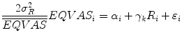
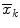
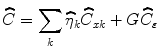
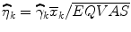
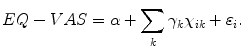

2.1 International EQ-5D Archive of Population Surveys
The international EQ-5D database archive consists of 27 EQ-5D population surveys collected in 24 countries. Countries with 1 or more population surveys include: Argentina, Armenia, Belgium, Canada, China, Denmark, England, Finland, France, Germany, Greece, Hungary, Italy, Japan, Korea, the Netherlands, New Zealand, Slovenia, Spain, Sweden, Thailand, United Kingdom, United States, and Zimbabwe. The datasets are structured in a standardized format to facilitate comparative research, although each survey also has its own characteristics and variables specific to the individual research context in which they were conducted. In addition, three datasets from Argentina, China, and Sweden (Stockholm area) were analyzed locally and results were added to the book, as the dataset transfer to the central archive was not possible from these countries. The datasets captured by this book currently include observations on 216,703 individuals. For a more detailed account of the data, see Table 2.1.
Table 2.1
National and Regional EQ-5D Population Surveys
Source | Sample size | Data collection | Survey method | |
|---|---|---|---|---|
National
| ||||
Argentina | Ministry of Health of Argentina 2005 | 41,392 | 2005 |
Face-to-face interviews on the 2005 Risk Factors Survey on a random selection of households representative also at regional level |
Belgium | ESEMED, König et al. 2009
| 2,411 | 2001–2003 |
Personal computer-based home interviews on a national representative sample of the noninstitutionalized general adult population as part of the European Study of the Epidemiology of Mental Disorders (ESEMeD) |
China | 8,031 | 2010 |
Face-to-face interviews on the representative 2010 Household Health Survey (HHS) | |
Denmark | Sorensen et al. 2009
| 16,861 | 2000–2001 |
Face-to-face interviews on three representative national surveys, including a national health interview survey undertaken by the National Institute of Public Health (SUSY-2000), a health survey undertaken in Funen County (Funen data set) and a national health survey undertaken by the University of Southern Denmark (SDU data set) with a total of 22,486 individuals |
England | Health Survey for England 2010 | 14,763 | 2008 |
Computer assisted interviews on a randomly selected sample of households in England |
Finland | Saarni et al. 2006
| 8,028 | 2000 |
Face-to-face interviews on the Health 2000 survey sample, which is a representative survey of the Finnish population aged 30 and over |
France | ESEMED, König et al. 2009
| 2,892 | 2001–2003 |
Personal computer-based home interviews on a national representative sample of the noninstitutionalized general adult population as part of the European Study of the Epidemiology of Mental Disorders (ESEMeD) |
Germany | ESEMED, König et al. 2009
| 3,552 | 2001–2003 |
Personal computer-based home interviews on a national representative sample of the noninstitutionalized general adult population as part of the European Study of the Epidemiology of Mental Disorders (ESEMeD) |
Greece | Yfantopoulous 1999
| 464 | 1998 |
Face-to-face interviews on a sample of 500 individuals selected from the general population |
Hungary | Szende and Nemeth 2003
| 5,503 | 2000 |
Self-administered questionnaire during a personal interview on a random sample of 7000 people from the electoral registry |
Italy | ESEMED, König et al. 2009
| 4,709 | 2001–2003 |
Personal computer-based home interviews on a national representative sample of the noninstitutionalized general adult population as part of the European Study of the Epidemiology of Mental Disorders (ESEMeD) |
Korea | Lee et al. 2009
| 1,307 | 2007 |
Face-to-face interviews on a random sample of the South Korean residential registry |
Netherlands | ESEMED, König et al. 2009
| 2,367 | 2001–2003 |
Personal computer-based home interviews on a national representative sample of the noninstitutionalized general adult population as part of the European Study of the Epidemiology of Mental Disorders (ESEMeD) |
New Zealand | Devlin et al. 2000
| 1,327 | 1999 |
Postal survey on a random sample of 3000 New Zealanders selected from the electoral roll |
Slovenia | Prevolnik Rupel and Rebolj 2001
| 742 | 2000 |
Postal survey on a randomized sample of 3000 people selected from the general population |
Spain | ESEMED, König et al. 2009
| 5,473 | 2001–2003 |
Personal computer-based home interviews on a national representative sample of the noninstitutionalized general adult population as part of the European Study of the Epidemiology of Mental Disorders (ESEMeD) |
Sweden | Björk et al. 1999
| 534 | 1994 |
Postal survey on a randomized sample of 1000 Swedish citizens selected from the general population from an address register |
Thailand | Tongsiri et al. 2011
| 1,409 | 2007 |
Face-to-face interviews on a random national sample provided by the national statistical office |
United Kingdom | Kind et al. 1998
| 3,395 | 1993 |
Face-to-face interviews on a random sample of 5324 individuals selected from the general population (based on the Postcode Address file) from England, Scotland and Wales |
United States | MEPS, Sullivan et al. 2005
| 38,678 | 2000–2002 |
Paper-and-pencil questionnaire among the Medical Expenditure Panel Survey participants a nationally representative survey of the US civilian noninstitutionalized population. The research pooled 2000, 2001, and 2002 MEPS data on 23,839, 32,122, and 37,418 individuals |
Regional
| ||||
Armenia (5 regions) | Gharagebakyan 2003
| 2,217 | 2002 |
Face-to-face interviews on a random sample of 1300 households (2337 individuals) selected from the general population of 5 regions of Armenia (Yerevan city, Gegharkounik, Shirak, Lori, and Suinik) |
Canada (Alberta) | HQCA 2010
| 5,010 | 2010 |
Computer Assisted Telephone Interviewing with a sample of 5010 adult Albertans |
Japan (3 prefectures) | Tsuchiya et al. 2002 | 620 | 1998 |
Face-to-face interviews on a random sample of 972 individuals selected from the general population (over age 20) of 3 Prefectures in Japan – Saitama, Hiroshima and Hokkaido |
Spain (Canary Islands) | Canary Health Survey 2009
| 4,468 | 2009 |
Personal computer-based home interviews on a district representative regional Canaries Health Survey to 4600 individuals |
Spain (Catalonia) | Catalunya Health Survey 2011
| 5,603 | 2011 |
Personal computer-based home interviews on a district representative regional Catalonia Continuous Health Survey in semester waves of 2500 individuals |
Sweden (Stockholm county) | Sun et al. 2012
| 32,597 | 2006 |
Postal survey on a representative sample of the Stockholm County population aged 20–88 years |
Zimbabwe (Harare) | Jelsma 2003 | 2,350 | 2000 |
Face-to-face interviews with 2488 residents from Glenview (a high density suburb of Harare). As compared to the 1992 census Harare Profile, males were underrepresented and there were more young and better educated respondents than in the general population |
All of the surveys used a standardized version of EQ-5D-3L. The Dutch, Swedish and Finnish versions were translated in 1987 according to a ‘simultaneous’ process while the remaining versions were translated according to the EuroQol Group’s translation protocol – based on international guidelines. However, some differences between sampling and data collection methods should be noted.
Most importantly, while the majority of surveys were national representative surveys covering the whole of the country, some surveys covered a specific part (such as prefectures, regions or even city areas). Therefore, care should be exercised in generalizing data outside the geographic location captured by the data collection. Results in this book are reported separately for the national and the regional surveys.
Surveys also differed in sample sizes and in the method of data collection. The Argentinean dataset had the largest sample with over 41,000 respondents, while the Greek and the Swedish national surveys had the smallest sample of around 500 respondents. Some of the surveys were postal while others were performed as part of a face-to-face interview or administered by telephone. Since the questions asked in EQ-5D are very simple to answer, there is no reason to believe that there would be a significant impact on results other than differences in response rates.
While only the most recent national surveys were included in this book from each country, the date of data collection varied considerably across countries. Data collection for the majority of surveys took place during or after 2000, however some surveys were older with the United Kingdom and Swedish national datasets being the earliest from 1993 to 1994, respectively. These differences should be considered when interpreting results, given that health-related quality of life in general and specifically EQ-5D ratings and values could have changed over time.
Standardized variables across all datasets included reported problems by the five dimensions, self-reported EQ VAS ratings, and the EQ-5D index values. In addition, all analyses of EQ-5D data presented in this book focused on three main characteristics of the population: age, gender, and education level. Age in most surveys was measured as a continuous variable (life years), while gender was recorded as a categorical variable. Education level in each country was recoded to a three-level scale, distinguishing low (i.e. primary), medium (i.e. secondary), and high (i.e. university degree) education level.
All data analyses were performed using SPSS version 19 and Stata version 12 statistical software packages. All codes were checked and analyses were reproduced by a second analyst. The exact methodologies are described in the remainder of this chapter.
2.2 Methods of Describing EQ-5D Population Norms
The EuroQol Group is frequently asked to provide EQ-5D population reference data (sometimes called normative data) for a specific country or international region. Such data can be used as reference data to compare profiles for patients with specific conditions with data for the average person in the general population in a similar age and/or gender group. This comparison helps to identify the burden of disease in a particular patient population.
Descriptive statistics are provided for EQ VAS, the five dimensions, and EQ-5D-3L index values for the total population and by gender and the following age groups: 18–24, 25–34, 35–44, 45–54, 55–64, 65–74, 75+ years.
EQ-5D index value calculations are provided using the following value sets (Szende et al. 2007):
- European VAS value set for all countries. Note that the European VAS value set was constructed using data from 11 valuation studies in 6 countries: Finland (1), Germany (3), The Netherlands (1), Spain (3), Sweden (1) and the UK (2). This survey included enough data from different European regions to make the European VAS dataset moderately representative for Europe. (Greiner et al. 2003; Weijnen et al. 2003).
- Country-specific time trade-off (TTO) value set if available. Note that the time trade-off (TTO) method has played an important role in generating value sets for the EQ-5D as one of the most widely accepted preference elicitation methods for health states (Torrance 1986) for economic evaluation and the method of choice in the first large-scale EQ-5D valuation study (Dolan 1997). Table 2.2 summarizes those 13 countries that have their own TTO value sets and describes the value sets.Table 2.2Coefficients for the estimation of the EQ-5D index values based on TTO valuation studiesCountrySourceModelMADConstantMO2MO3SC2SC3UA2UA3PD2PD3AD2AD3N3OtherArgentinaAugustovski 2009OLS0.039−0.189−0.272−0.128−0.209−0.111−0.067−0.130−0.209−0.082−0.135O2: 0.003O3: –0.355Z2:–0.413Z3: 0.117C22: 0.010C32: –0.005DenmarkWittrup-Jensen 2002RE0.089−0.114−0.053−0.411−0.063−0.192−0.048−0.144−0.062−0.396−0.068−0.367FranceChevalier 2011RE0.043−0.155−0.372−0.212−0.326−0.156−0.189−0.112−0.265−0.090−0.204−0.174GermanyGreiner 2005RE0.047−0.001−0.099−0.327−0.087−0.174−0.112−0.315−0.065−0.323ItalyScalone 2013RE0.030−0.076−0.518−0.100−0.289−0.085−0.198−0.098−0.334−0.095−0.213D1: 0.043JapanTsuchiya 2002OLS0.015−0.152−0.075−0.418−0.054−0.102−0.044−0.133−0.080−0.194−0.063−0.112KoreaLee 2009OLS0.029−0.050−0.418−0.046−0.136−0.051−0.208−0.037−0.151−0.043−0.158−0.050NetherlandsLamers 2006RE0.030−0.071−0.036−0.161−0.082−0.152−0.032−0.057−0.086−0.329−0.124−0.325−0.234SpainBadia 2001RENR−0.024−0.106−0.430−0.134−0.309−0.071−0.195−0.089−0.261−0.062−0.144−0.291ThailandTongsiri 2011RE0.080−0.202−0.121−0.432−0.121−0.242−0.059−0.118−0.072−0.209−0.032−0.110−0.139United KingdomMVH Group 1995RE0.039−0.081−0.069−0.314−0.104−0.214−0.036−0.094−0.123−0.386−0.071−0.236−0.269United StatesShaw 2005RE0.025−0.146−0.558−0.175−0.471−0.140−0.374−0.173−0.537−0.156−0.450D1: 0.140I22: –0.011I3: 0.122I32: 0.015ZimbabweJelsma 2003RE0.049−0.100−0.056−0.204−0.092−0.231−0.043−0.135−0.067−0.302−0.046−0.173
- Country-specific VAS value set if available. Note that the Visual Analogue Scale (VAS) has become the other widely used method to elicit preferences for the EQ-5D, including nine countries. Table 2.3 summarizes countries that have their own VAS based value sets and describes the value sets, including the European value set.Table 2.3Coefficients for the estimation of the EQ-5D index values based on VAS valuation studiesCountrySourceModelMADConstantMO2MO3SC2SC3UA2UA3PD2PD3AD2AD3N3OtherArgentinaAugustovski 2009OLS0.020−0.248−0.247−0.184−0.178−0.209−0.148−0.185−0.157−0.150−0.116O2: –0.028O3: –0.388Z2: –0.232Z3: 0.086C22: 0.020C32: 0.008BelgiumCleemput 2004RE0.036−0.152−0.074−0.148−0.083−0.166−0.031−0.062−0.084−0.168−0.103−0.206−0.256DenmarkWittrup-Jensen 2002RENR−0.225−0.126−0.252−0.112−0.224−0.064−0.128−0.078−0.156−0.091−0.182EuropeaGreiner 2003RE0.030−0.128−0.066−0.183−0.117−0.156−0.026−0.086−0.093−0.164−0.089−0.129−0.229FinlandOhinmaa 1995OLSNR−0.158−0.058−0.230−0.098−0.143−0.047−0.131−0.111−0.153−0.160−0.196GermanybClaes 1999RE0.0360.9260.9450.3930.8080.4700.8800.5540.9750.4670.8170.468New ZealandDevlin 2000RE0.041−0.204−0.075−0.150−0.071−0.142−0.014−0.028−0.080−0.160−0.092−0.184−0.217SloveniaPrevolnik Rupel 2000OLSNR−0.128−0.206−0.412−0.093−0.186−0.054−0.108−0.111−0.222−0.093−0.186SpainBadia 1998OLSNR−0.150−0.090−0.179−0.101−0.202−0.055−0.110−0.060−0.119−0.051−0.102−0.212United KingdomMVH Group 1995RENR−0.155−0.071−0.182−0.093−0.145−0.031−0.081−0.084−0.171−0.063−0.124−0.215
This means that for countries with no available value set from their own general population, only the European VAS value set based EQ-5D index values are summarised. However, for countries with available TTO and/or VAS value sets, additional population norms of EQ-5D index values are calculated.
To summarize key results on reported problems, EQ VAS, and EQ-5D index values, countries are tabulated in alphabetic order and are not ranked. Detailed country-by-country results are provided in the appendices. Because the population norms data are presented by age and gender, there is no need for the sample to have the same age distribution as the general population in each country. Therefore the data that are presented in the tables have not been standardized for age or gender. This means that international comparisons across several age groups should be made with caution as the demographic build-up by age and gender varies between countries, and that the samples of the general population used to create the tables do not necessarily follow that same distribution. However, international comparisons of data contained in a single cell (i.e. 1 age and gender group) are valid. The following section describes the methodology used to analyse cross-country differences in EQ-5D population data.
2.3 Methods of Cross-Country Analysis of EQ-5D Data
Cross-country summary data for reported problems by five dimensions and EQ VAS were estimated using a standardized population structure for all countries with national EQ-5D surveys. Countries were tabulated in alphabetic order. Standardization for age was performed to avoid bias due to the fact that some populations have a relatively higher proportion of elderly people. Age standardization of reported problems by dimension and EQ VAS was based on the European population structure using Eurostat data from 2010 (Table 2.4).
Table 2.4
European population age structure
Age group | EU population (%) |
|---|---|
18–24 | 11 |
25–34 | 17 |
35–44 | 18 |
45–54 | 18 |
55–64 | 15 |
65–74 | 11 |
75+ | 10 |
ALL
|
100
|
To explore reasons for cross-country differences in EQ-5D data, correlations between country-specific EQ-5D data (EQ VAS and five dimensions) and country-specific economic and health system macro indicators were calculated.
Living standards were estimated by means of Gross Domestic Product (GDP) per capita and unemployment rate. Indicators for health care system performance were health expenditure per capita and health expenditure as a % of GDP, number of hospital beds per 1,000 people and number of physicians per 1,000 people. The indicators were selected on the basis of a presumed or possible relationship with self-reported health. Data were obtained from the World Health Organization Statistical Information System and the World Bank. The data were from 2010 or the closest year with available data (Table 2.5). An alternative set of macro data was also used to see how results might change when using macro data from the same year as the EQ-5D data collection, including variables on gross national income on purchasing power parity, unemployment rate, and health expenditure data.
Table 2.5
Country-specific economic and health system macro indicators
GDP per capita $ 2010 | Unemployment rate % 2010a
| Health expenditure (% of GDP) 2010a
| Health expenditure per capita $ 2010a
| Physicians per 1,000 people 2004–2009a
| |
|---|---|---|---|---|---|
Argentina | 9,124 | 8.6 | 8.1 | 742 | 3.2 |
Belgium | 43,006 | 8.3 | 10.7 | 4,618 | 3.0 |
China | 4,433 | 4.3 | 5.1 | 221 | 1.4 |
Denmark | 56,486 | 7.4 | 11.4 | 6,422 | 3.4 |
France | 39,170 | 9.3 | 11.9 | 4,691 | 3.5 |
Germany | 40,164 | 7.1 | 11.6 | 4,668 | 3.5 |
Greece | 25,832 | 12.5 | 10.2 | 2,729 | 6.0 |
Hungary | 12,863 | 11.2 | 7.3 | 942 | 3.1 |
Italy | 33,787 | 8.4 | 9.5 | 3,248 | 4.2 |
Korea | 20,540 | 3.7 | 6.9 | 1,439 | 2.0 |
Netherlands | 46,623 | 4.5 | 11.9 | 5,593 | 3.9 |
New Zealand | 32,407 | 6.5 | 10.1 | 3,279 | 2.4 |
Slovenia | 22,898 | 7.2 | 9.4 | 2,154 | 2.5 |
Spain | 29,956 | 20.1 | 9.5 | 2,883 | 3.7 |
Sweden | 49,360 | 8.4 | 9.6 | 4,710 | 3.8 |
Thailand | 4,614 | 1.2 | 3.9 | 179 | 0.3 |
United Kingdom | 36,256 | 7.8 | 9.6 | 3,503 | 2.7 |
United States | 46,612 | 9.6 | 17.9 | 8,362 | 2.4 |
For all correlation analyses, non-parametric Spearman rank correlations were calculated. For this calculation, countries were ranked based on mean self-assessed health results, and their living standards and health care system performance characteristics. A high rank correlation means that the ranking of countries on one variable (e.g. prevalence of self-reported health problems) is similar to the ranking of another variable (e.g. GDP per capita).
2.4 Methods of Sociodemographic Analysis of EQ-5D Data
Two main approaches were used to derive socio-demographic indicators based on EQ-5D, based on odds ratios and concentration indices.
Logistic regression age-adjusted odds ratios for reporting problems on each EQ-5D dimension were calculated by age groups, gender, and education. An odds ratio higher than 1 indicates that the examined group reported more health problems than the reference group. The reference group was males, 18–24 years, with medium/high education.
Secondly, the analysis used the concentration index method, which is a single index measure of relative inequalities (Wagstaff et al. 1991; Kakwani et al. 1997). The overall health concentration index measures the mean difference in health between individuals as a proportion of the average health of the total population. This index can also be interpreted as a measure of how unequal the distribution of health is in the population. Health inequality is measured on a scale between 0 (meaning complete equality in health) and 1 (meaning complete inequality in health). Researchers also showed that the concentration index value also corresponds to 75 % of the Schutz index, and as such, it can also be interpreted as the proportion of health that should be redistributed from those above the average level to those below the average in order to equalize the distribution of health. (Koolman and Doorslaer 2004).
The overall concentration index can be decomposed to identify the impact of various factors, such as socio-demographic or quality of life characteristics, in order to determine how much each factor contributes to inequalities (Wagstaff and Doorslaer 2004; Clarke et al. 2010). In the current analysis, overall self-reported health was measured by the EQ VAS. Decomposition analysis was performed to determine inequalities by socio-demographic factors and by the EQ-5D dimensions, as well as in a combined model in which both socio-demographic and EQ-5D dimension variables were included.
The health concentration index for overall self-reported health, as measured by the EQ VAS, was computed by the convenient regression model as proposed by Kakwani et al. (1997):where R
i
is the relative fractional rank of the ith individual (ranked by the individual’s EQ VAS health), and γk is the estimated concentration index.

For the purposes of the decomposition analysis, the same estimation is used for all explanatory variables (by replacing EQ VAS with the explanatory variable in the equation and also using this variable for ranking purposes).
The total health concentration index can be written as the weighted sum of the concentration indices of the explanatory variables and the generalized concentration index of ε:where the weights are equal to the elasticities of EQ VAS score with respect to each explanatory variable in the model:where  (the mean of xk explanatory variables: age, gender, education, EQ-5D problems) is multiplied by the coefficients for each explanatory variable that are taken from the linear regression model to explain EQ VAS:



Open Access This chapter is distributed under the terms of the Creative Commons Attribution Noncommercial License, which permits any noncommercial use, distribution, and reproduction in any medium, provided the original author(s) and source are credited.
References
Badia X et al (1998) The Spanish VAS tariff based on valuation of EQ-5D health states from the general population. In: Rabin RE et al (eds) EuroQol plenary meeting, Rotterdam, 2–3 Oct 1997. Discussion papers. Centre for Health Policy & Law, Erasmus University, Rotterdam, pp 93–114
Gharagebakyan G, Ghukasyan H, Williams A, Szende A (2003) Social inequalities in self-reported health: is Armenia different from Slovenia? In: Rupel VP (ed) 20th plenary meeting of the EuroQol Group. Discussion papers. Republic of Slovenia, Ministry of Health, pp 79–87
Canary Health Survey (2009) Canary Islands health service and ISTAC
Catalunya Health Survey (2011) Health plan service. Department of Health, Government of Catalonia
Claes C et al (1999) An interview-based comparison of the TTO and VAS values given to EuroQol states of health by the general German population. In: Greiner W, Schulenburg J-M. Graf v.d. et al (eds) EQ plenary meeting, Hannover, 1–2 Oct 1998. Discussion papers, pp 13–39
Cleemput I et al (2004) Re-scaling social preference data: implications for modelling. In: Kind P, Macran S (eds) Proceedings of the 19th plenary meeting of the EuroQol Group 2002. York Centre for Health Economics, pp 113–122
Jelsma J, Hansen K, de Weerdt W, Cock P, Kind P (2003) How do Zimbabweans value health states? Popul Health Metrics 1:11CrossRef
Devlin NJ, Hansen P, Kind P, Williams A (2000) The health state preferences and logical inconsistencies of New Zealanders: a tale of two tariffs. York Centre for Health Economics/University of Otago, New Zealand. Discussion paper no 180
Greiner W et al (2003) A European EQ-5D VAS valuation set. In: Brooks R et al (eds) The measurement and valuation of health status using EQ-5D: a European perspective. Kluwer, Dordrecht
Health Quality Council Alberta (HQCA) (2010) Satisfaction and Experience with Health Care Services: A Survey with Albertans in 2010
Kakwani NC, Wagstaff A, Doorsaler EV (1997) Socioeconomic inequalities in health: measurement, computation and statistical inference. Journal of Econometrics 77:87–103CrossRef
Kind P, Dolan P, Gudex C, Williams A (1998) Variations in population health status: results from a United Kingdom national questionnaire survey. Bmj 316(7133):736–41PubMedCentralPubMedCrossRef
König HH, Bernert S, Angermeyer MC, Matschinger H, Martinez M, Vilagut G, Haro JM, de Girolamo G, de Graaf R, Kovess V, Alonso J, ESEMeD/MHEDEA 2000 Investigators (2000) Comparison of population health status in six european countries: results of a representative survey using the EQ-5D questionnaire. Med Care 47(2):255–61CrossRef
MVH Group (1995) The Measurement and Valuation of Health. Final report on the modelling of valuation tariffs. York: MVH Group, Centre for Health Economics, York.
Ohinmaa A et al (1996) Modelling EuroQol values of Finnish adult population. In: Badia X et al (eds) EuroQol plenary meeting 1995 discussion papers. Institut Universitari de Salut Publica de Catalunya, Barcelona, pp 67–76. ISBN: 84-477-0574-9
Household Health Survey (2010) National Natural Science Foundation of China 70873064, Nanjing Medical University.
Prevolnik Rupel V, Rebolj M (2001) The Slovenian VAS tariff based on valuations of EQ-5D health states from the general population. In: Cabasés J, Gaminde I (eds) 17th plenary meeting of the EuroQol Group. Discussion papers. Universidad Pública de Navarra, pp 11–23
Sun S, Chen J, Johannesson M, Kind P, Xu L, Zhang Y, Burström K (2011) Population health status in China: EQ-5D results, by age, sex and socio-economic status, from the National Health Services Survey 2008. Qual Life Res 20(3):309–20PubMedCentralPubMedCrossRef
Szende A (Editor), Oppe M (Editor), Devlin N (Editor) (2007) EQ-5D Value Sets: Inventory, Comparative Review and User Guide. (EuroQol Group Monographs). Springer.
Szende A, Nemeth R (2003) Health-related quality of life of the Hungarian population. Orv Hetil 144(34):1667–74PubMed
Weijnen T, Nieuwenhuizen M, Ohinmaa A, de Charro F (2003) Construction of the EQ-net VAS and TTO databases. In: Brooks R, Rabin R, de Charro F. (Editors). The measurement and valuation of health status using EQ-5D: A European perspective. Kluwer Academic Publishers:55–81.
Wittrup-Jensen KU et al (2002) Estimating Danish EQ-5D tariffs using TTO and VAS. In: Norinder A et al (eds) Proceedings of the 18th plenary meeting of the EuroQol Group, Copenhagen, 2001. IHE, The Swedish Institute for Health Economics, pp 257–292
Yfantopoulos Y (1999). Quality of life measurment and health production in Greece. In: Greiner W, J-M. Graf v.d. Schulenburg, Piercy J. (Editors). (EuroQol) Plenary Meeting. Discussion Papers. Hannover Uni-Verlag Witte: 100–114.